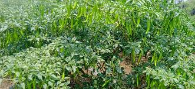

Mirchi (Chili Pepper): The Spicy Crop

Uses of Mirchi (Chili Pepper)
Chili peppers are a staple in cuisines worldwide and have multiple uses:
- Food: Adds heat and flavor in curries, sauces, and spice blends.
- Medicinal: Contains capsaicin, known for pain relief and anti-inflammatory properties.
- Preserves: Used in pickling and drying for long-term storage.
Types of Mirchi
Several varieties of chili peppers are cultivated for different heat levels and flavors:
- Green Chili: Mild to medium heat, commonly used fresh in cooking.
- Bird’s Eye Chili: Very hot, popular in Southeast Asian cuisine.
- Cayenne Pepper: Used for drying and powdering, adds a strong heat.
- Bhut Jolokia (Ghost Pepper): Extremely hot, used sparingly in curries and sauces.
Growth Requirements for Mirchi
Chili peppers thrive under these growing conditions:
- Climate: Warm to hot climates with temperatures between 20-35°C.
- Soil: Well-drained, fertile soil with a pH of 6.0-7.0.
- Water: Requires moderate watering, especially during flowering and fruiting stages.
Natural Fertilizers for Mirchi
Organic fertilizers benefit chili pepper plants by enhancing their growth:
- Compost: Supplies essential nutrients and improves soil quality.
- Wood Ash: Provides potassium, which supports flowering and fruiting.
- Bone Meal: Rich in phosphorus, aids in root and fruit development.
Pest and Disease Prevention
Common pests and diseases in chili plants can be managed by:
- Aphids: Controlled using neem oil or natural predators like ladybugs.
- Powdery Mildew: Prevented by proper spacing and airflow around plants.
- Spider Mites: Managed with regular spraying of water or insecticidal soap.
Benefits of Mirchi (Chili Pepper)
- Rich in Vitamins: High in vitamin C and antioxidants.
- Pain Relief: Capsaicin is used in topical creams for pain relief.
- Boosts Immunity: Contains immune-boosting compounds that aid in overall health.
Frequently Asked Questions
1. How long does it take for mirchi to grow?
Chili peppers generally take 60-90 days from planting to harvest, depending on the variety.
2. Can chili peppers be grown indoors?
Yes, many chili varieties can be grown indoors, provided they receive enough sunlight and warmth.
Back to Crop List